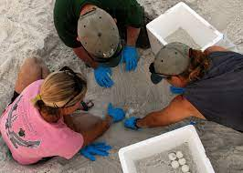
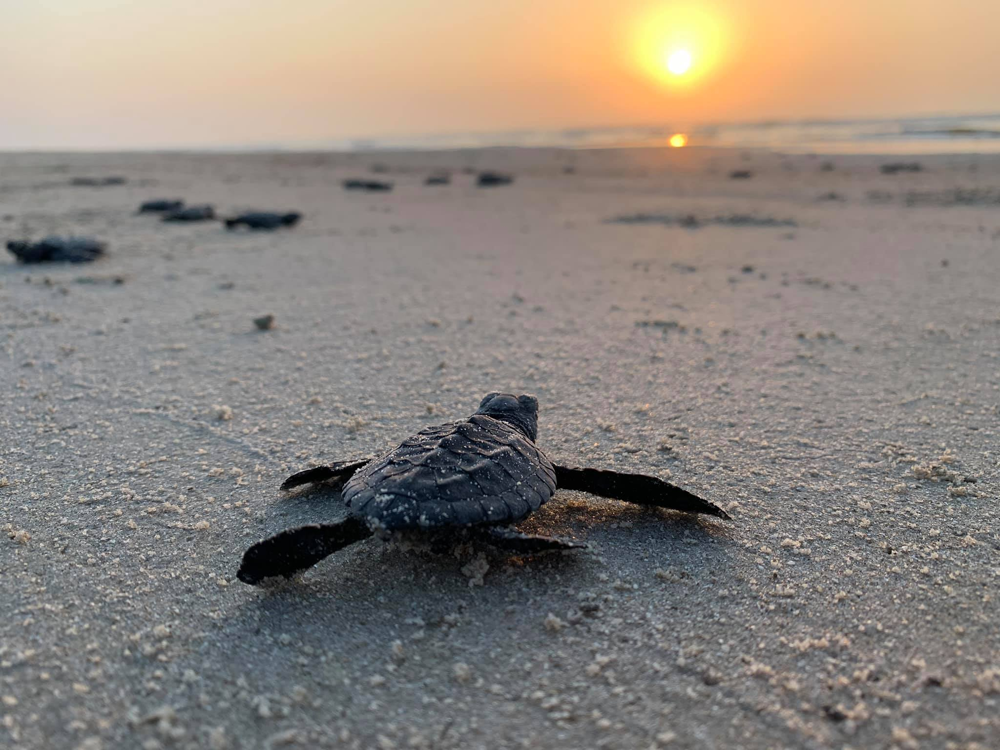

One of 18 turtle hatcheries along Sri Lanka's southern coast is the Turtle Care Center at Kosgoda Beach. The center was founded in 1981 and is situated in the beach community of Kosgoda in South Western Australia. Additionally, Kosgoda serves as the nesting ground for all five species of turtles that come to Sri Lanka. This is not the case with many of the other island-area hatcheries, where just some of the species are present on the beaches.
The facility primarily serves as a hatchery and makes great efforts to boost the rate of hatching and survival of young turtles. However, the Care Center also treats and releases sick or injured persons back into the ocean after treating them. They also organize awareness campaigns for both domestic and foreign tourists and volunteer initiatives.

|

|
|
 |
|---|
| Discover | Comapany |
|---|---|
| Turtle Species | About us |
| Turtle Hatcheries | Contact |
| Threats to Turtle | |
| Support | |
| Educational Resources | Purchace and Donate |